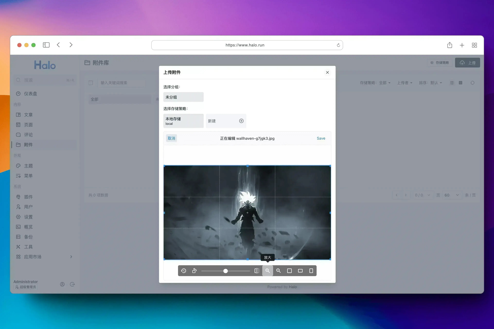

Halo 是一款强大易用的开源建站工具，它让你无需太多的技术知识就可以快速搭建一个博客、网站或者内容管理系统。具备可插拔架构、主题套用、富文本编辑器等多重特性，支持用户根据自己的喜好选择不同类型的插件及主题模板来定制化自己的站点功能及外观。让内容创作和发布更加便捷生动。
截至目前（2024 年 Q1 季度），Halo 已经在 Docker Hub 获得了超过 210 万次下载，GitHub Star 数突破 31 k，并拥有一百多名社区贡献者。
2024 年 04 月 01 日，强大易用的开源建站工具 Halo 正式发布 2.14.0 版本。
在这个版本中，Halo 主要优化部分功能的使用体验，以及其他 30 多项功能优化和问题修复。
亮点更新
支持在编辑器输入文章标题
在 2.14 版本中，我们为文章编辑页面添加了文章标题的输入框，不再需要打开设置弹框去设置文章标题。这样可以得到更流畅的文章编辑体验。


附件上传支持编辑图片
在 2.14 版本中，我们为附件上传添加了图片编辑功能，可以实现在图片上传之前对图片进行放大缩小、旋转、裁剪等操作。

支持下载附件
在 2.14 版本中，我们为附件管理添加了附件下载的功能，不再需要将附件链接复制到浏览器然后再进行下载。

邮件通知配置支持测试
在之前的版本中，配置邮件通知之后只能去尝试触发邮件发送才能够知道是否配置成功，这可能带来一定的配置难度，在这个版本中，我们在邮件配置表单中添加了测试功能，可以在配置完成之后提前测试邮件配置是否存在问题。

此外，Halo 的表单支持验证之后，后续部分需要表单验证的插件也可以为此进行适配。比如 S3 对象存储插件的存储策略表单，完成适配之后就可以在配置存储策略的时候验证配置是否成功，不再需要手动去上传附件来验证配置。
完整更新日志
新特性
邮件通知配置添加发送邮件地址配置选项。 by @lingrottin in #5351
功能优化
编辑器的代码块支持选择 Dart 语言。 by @Sakura-LF in #5531
问题修复
依赖更新
升级依赖 PF4J 至 3.11.0。 by @JohnNiang in #5462
升级依赖 Spring Boot 至 3.2.4。 by @JohnNiang in #5568